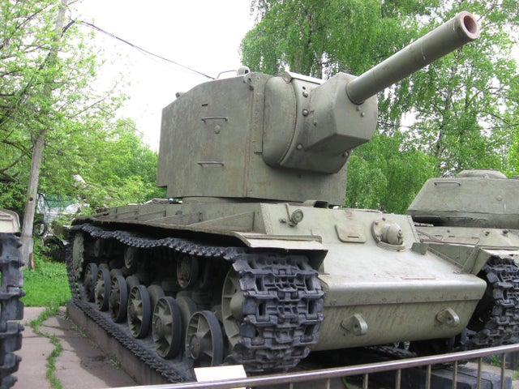

Light tanks
Soviet light tanks are typically the fastest tanks at their tiers. Like most Soviet tanks, they normally have a small frontal profile and sloped armor. While the recent map and class changes have shifted the game paradigm to a more brawl-focused ideal and reduced their relative power in general, they are still solid choices.
T-54 ltwt. Light Tank.
Click on the star to read more about the USSR or Click on the tank to read more about the T-54!
.jpg)
Medium tanks
Soviet medium tanks are fast and maneuverable, and are equipped with accurate guns with excellent dispersion values, unlike the other lines in the Russian tech tree (and they get even better in higher tiers). Most are jacks-of-all-trades and very versatile. Unfortunately, most of them suffer from poor gun depression, limiting their ability to go hull-down and make use of their strong frontal turrets. However, they also have excellent soft stats, such as ground resistance and camo, which allows them to perform the roles of scouting, damage-dealing, and moving across the map adequately. There are two medium lines that split after the T-34 at Tier V, and a mini-branch that splits after the T-44: One line has forward-mounted or center-mounted turrets with average guns, but the better chassis allows them to be more flexible. The mainly rear-mounted turret line has superior firepower, but it comes at the cost of having less protection, limited turret traverse and the inability to take advantage of many hull-down positions. The Object 430 mini-branch features respectable armor and massive 122mm main guns, but only at the cost of gun handling and a bit of mobility.
T-44 Medium Tank.
Click on the picture to read more about it!
.jpg)
Heavy tanks
Soviet heavy tanks have good guns, are surprisingly fast, and have strong armor; their frontal armor thickness makes them quite difficult to penetrate from the front unless weak spots are targeted, and their sloping can lead to bounces even from high-penetration guns. There are three lines plus a half-complete one (The only other nation with this many heavy lines is Germany): The KV/IS-4 line features very thick side armor; some thickest in the game, and moderately high health pool, but at cost of rather weak frontal armor and poor mobility. These tanks are all about sidescraping and angling their armor. Other than above average penetration, the gun stats and general firepower is below-average. The IS-7 line has armour that is more reliant on angles, but has better agility and alpha damage for brawling. The IS tanks are characterized by high alpha damage. The Object 705A line, an alternative branch researchable from the IS, features a unique combination of sloped armor, rear-mounted, heavily armored turrets and very high alpha damage that is even higher than that of tanks on the IS-7 line, at cost of having miserable gun stats, especially accuracy and awful agility, leaving them vulnerable to flanking. These tanks excel at sidescraping like the tanks on the KV/IS-4 line, but have a lot weaker side armor, so they rely on very high angles to bounce with their sides. Finally, there is a 4th mini-branch; T-10 line ending in the Object 277. These two tanks have some similarities with the tanks on the IS-7 line, but the major difference is the trade-off of having notably inferior armor for better agility and significantly better accuracy and penetration stats, providing game-play closer to that of a bulky medium tank with a very powerful gun, combining high alpha damage of a heavy tank and solid accuracy and penetration of a medium tank. Like with the German heavy tank lines, advancing deep into one line provides many modules, particularly gun modules, for the alternate heavy tank lines. Eliting the Object 257 and researching the IS-7 enables the player to unlock all the guns on the Object 705, making the stock grind significantly easier, while researching the BL-9 on the IS-3 allows player to avoid the infamously dreadful stock grind of the ST-I.
The only surviving KV-2 Heavy Tank.
Click on the picture to read more about it!
Tank Destroyers
Soviet tank destroyers generally have poor gun handling, but they have some of the best camouflage values in the game. They are ideal for damage-farming and sniping early in the match, and occasionally acting as makeshift assault guns later on. There are two Soviet TD lines: The more popular Object 268 line favors alpha damage, but it comes at a cost of slow traverse speeds and subpar viewrange. They also have very weak armor everwhere besides the gun mantlet, though it is strong enough to prevent penetrating hits from most non-artillery HE shells. The Object 268 V4 line favors mobility and has some of the toughest armor that can be found on TDs in the game. The armour is mostly reliable except for few weak spots, but the poor agility and accuracy can be difficult to adapt to. Both lines require patience in their game play, and (like the Soviet light tanks) will struggle to work efficiently outside their designated play style; ultimately, though, they continue to remain relevant in the game's meta.
SU-100 Tank Destroyer.
Click on the picture to read more about it!